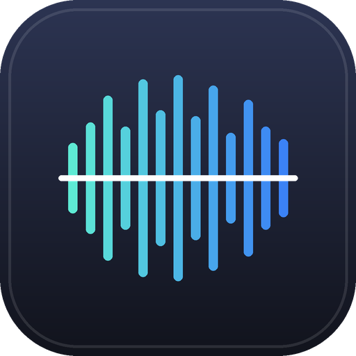
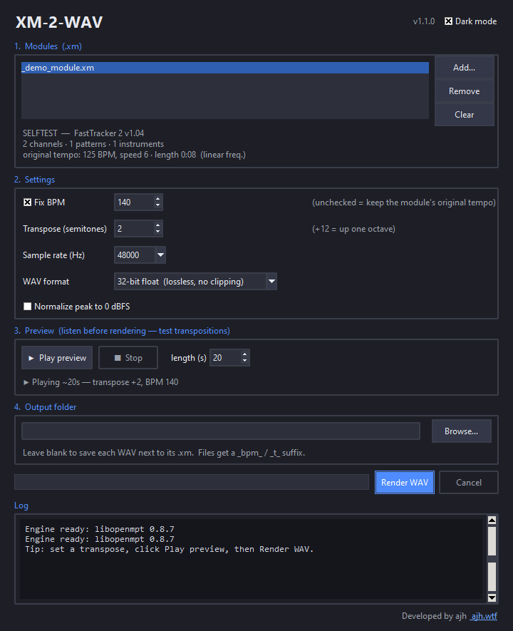

Import FastTracker II .xm modules and render them to lossless WAV — at any fixed BPM and any transposition, with an in-app preview so you can test transpositions before you render.
Free & open-source (MIT). Rendering by libopenmpt.

Renders to 32-bit float WAV (also 24/16-bit) — no quantisation, no clipping, full dynamic range.
Powered by libopenmpt — the same renderer used by OpenMPT — with 8-tap sinc interpolation.
Force the whole song to one constant BPM you choose. In-song tempo changes are neutralised.
Shift by semitones the way a tracker does — no DSP pitch-shift artifacts, samples untouched.
Play a short clip at your current transpose/BPM to A/B options before rendering.
Queue many modules, or script it: xm-2-wav song.xm --bpm 140 --transpose 3.
Double-click XM-2-WAV.exe — it's self-contained. Windows SmartScreen may warn about an
unrecognised publisher (the app is unsigned); click More info → Run anyway. The installer adds
Start-menu and desktop shortcuts.
Open the .dmg and drag XM-2-WAV to Applications. Because the app isn't
notarised, the first launch needs right-click → Open → Open (once). Or via Homebrew:
brew install libopenmpt
pipx install xm-2-wavAppImage (any distro):
chmod +x XM-2-WAV-x86_64.AppImage
./XM-2-WAV-x86_64.AppImageOn the rare distro without FUSE, run it with ./XM-2-WAV-x86_64.AppImage --appimage-extract-and-run.
Arch Linux (AUR):
yay -S xm-2-wav # or: paru -S xm-2-wavAny distro with Python (pip / pipx): install libopenmpt + Tk from your package manager first, then:
# Arch: sudo pacman -S libopenmpt tk python-numpy
# Debian/Ubuntu: sudo apt install libopenmpt0 python3-tk
# Fedora: sudo dnf install libopenmpt python3-tkinter
pipx install "xm-2-wav[preview]"
xm-2-wav